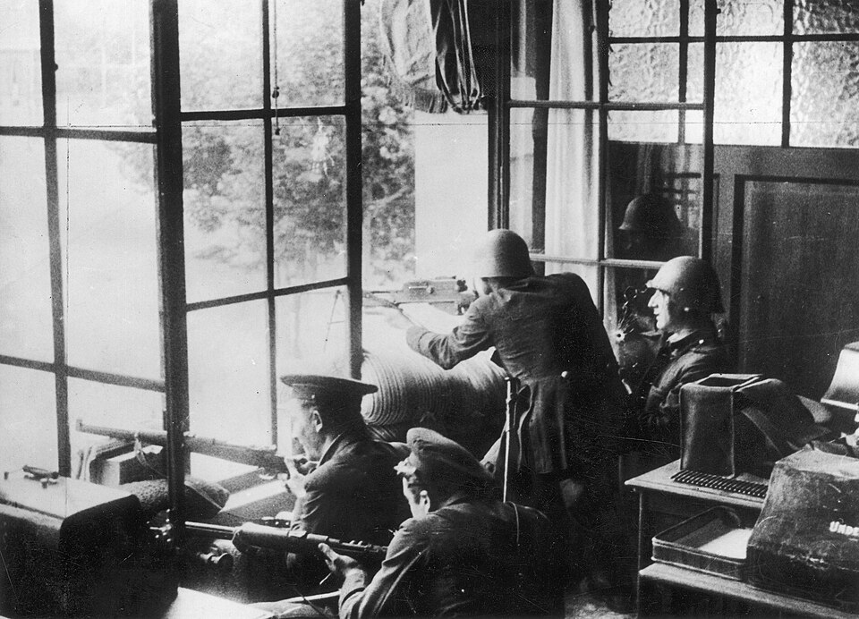

La sublevación iniciada en Melilla se extiende a guarniciones de la Península
El Gobierno de la República asegura dominar la situación, mientras las radios difunden boletines contradictorios. Los sindicatos reclaman armas y Madrid pasa la noche en vela junto a los receptores.

Madrid ha vivido la jornada pegado a los aparatos de radio. Desde anoche corrían rumores de que la guarnición de Melilla se había alzado en armas, y esta mañana los boletines oficiales los confirmaron a medias: hay un movimiento militar en Marruecos, se dijo, pero la Península permanece tranquila. A media tarde, sin embargo, emisoras del sur difundían proclamas de mando castrense, y a la noche nadie sabía ya qué guarniciones obedecen al Gobierno y cuáles no. En las terrazas, en los portales, en la Puerta del Sol, los corrillos se forman y se deshacen alrededor de cada receptor, con el calor de julio pesando sobre una ciudad en vela.
Los hechos comprobados son estos: ayer por la tarde se sublevó parte de la guarnición de Melilla, y en pocas horas el movimiento se extendió a Tetuán y Ceuta; hoy, unidades de varias capitales andaluzas parecen haberse sumado, mientras otras plazas se declaran leales. El Gobierno de la República ha difundido notas sucesivas asegurando que domina la situación y que el alzamiento quedará circunscrito; las emisoras controladas por los sublevados sostienen lo contrario. Entre unas y otras, el ciudadano no dispone esta noche de un mapa fiable de su propio país. Los ministros permanecen reunidos desde hace horas, y a última hora se hablaba insistentemente de crisis y de consultas.
La jornada no llega de un cielo sereno. Hace apenas una semana caían asesinados en Madrid el teniente Castillo y el señor Calvo Sotelo, y los dos entierros fueron dos manifestaciones de duelo y de encono. La primavera ha dejado huelgas, pistolas y un lenguaje público cada día más áspero; desde hace meses se hablaba en voz baja de conspiraciones en los cuarteles, como se habló en 1932, cuando la sublevación del general Sanjurjo quedó deshecha en una mañana. Ese precedente es hoy el argumento de quienes llaman a la calma: los pronunciamientos, dicen, se miden en horas, y la República ya venció uno.
Las organizaciones obreras han pedido armas para defender al régimen, y la UGT y la CNT han declarado la huelga general; el Gobierno, hasta la hora de cerrar esta edición, no ha accedido al reparto. En los barrios, mujeres con cestas hacían cola ante los ultramarinos por lo que pudiera venir; en las estaciones, viajeros indecisos deshacían el equipaje. Cuentan que en algunos cafés se discutía a gritos y en otros se jugaba al dominó con obstinación, como si el ruido de las fichas conjurara el otro. La noche ha caído sobre Madrid sin pan de certezas: solo boletines que se contradicen de hora en hora.
Este diario renuncia esta noche a profetizar. No sabemos si lo de hoy es un pronunciamiento condenado a deshacerse en días, como el del 32, o algo distinto para lo que aún no tenemos nombre. Sabemos que media España escucha la radio con esperanza y la otra media con miedo, y que las dos son España. Mañana estas mismas columnas intentarán contar con más orden lo que hoy solo puede contarse como se ha vivido: en desorden. Quiera la fortuna que la sangre no corra, que los cuarteles vuelvan a sus banderas y que este sábado de julio quede en los anales como un susto y no como una fecha.